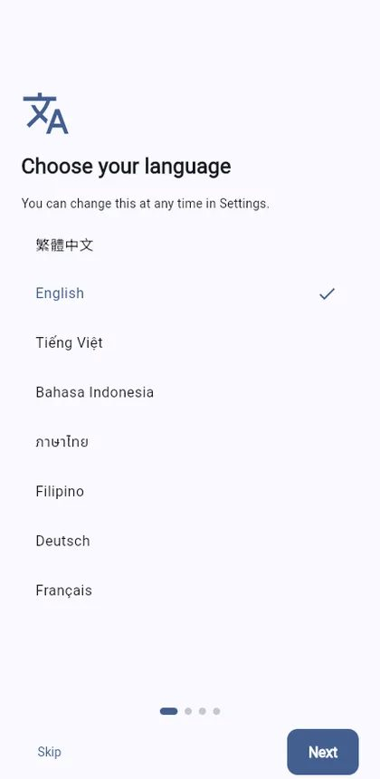
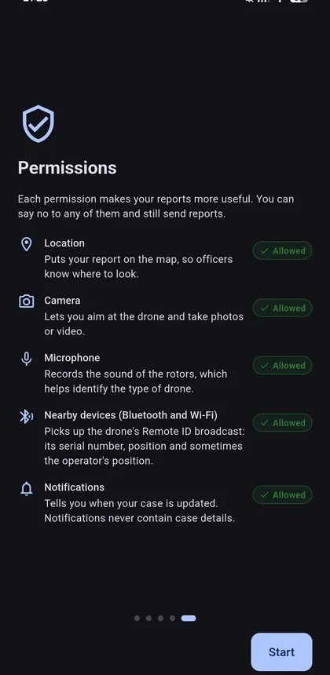
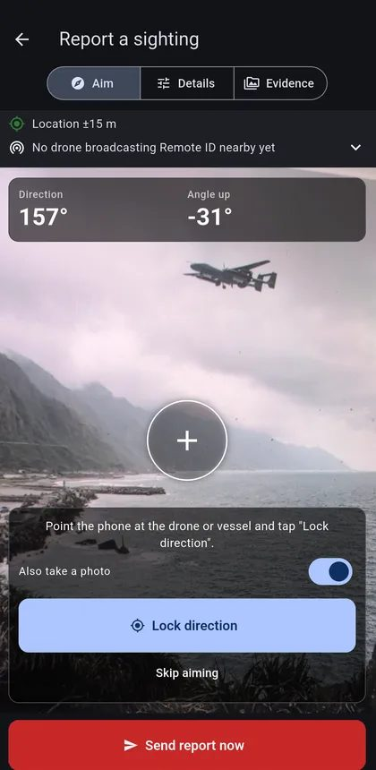
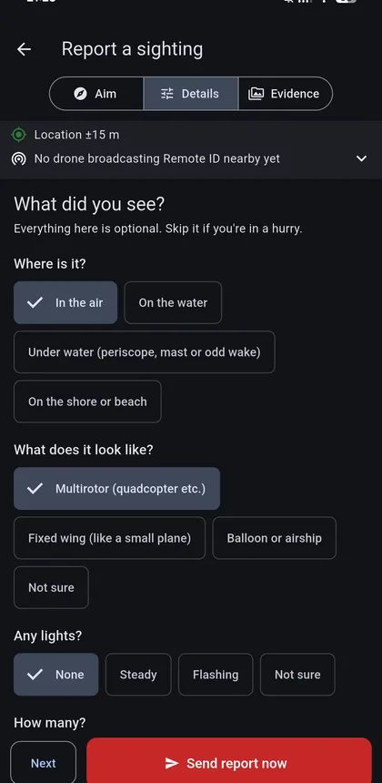
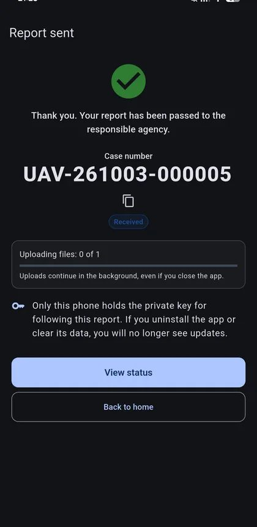
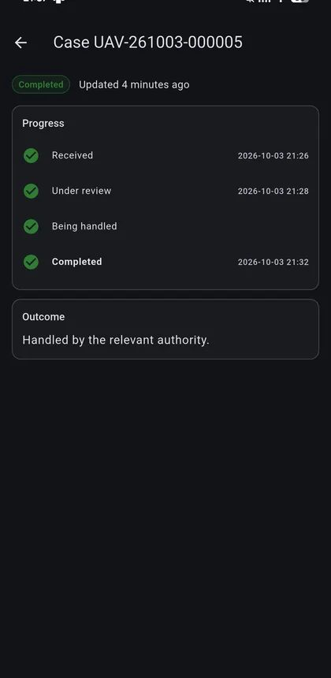

Android App
最適合正在發生的目擊：用指南針記錄方向與仰角、接收無人機遙控識別（Remote ID）訊號、在背景繼續上傳檔案、沒有網路時先存起來稍後自動送出，並在案件有進度時通知您。
本系統為「Taiwan Defense Tech Hackathon 2026」展示用途，並非政府官方服務。
一步一步說明 Android App 與網頁版如何通報可疑的無人機、無人艇或其他載具。
最適合正在發生的目擊：用指南針記錄方向與仰角、接收無人機遙控識別（Remote ID）訊號、在背景繼續上傳檔案、沒有網路時先存起來稍後自動送出，並在案件有進度時通知您。
在任何瀏覽器開啟 reporting.tw/app 即可使用，不需安裝，也適用 iPhone。適合事後通報。無法接收 Remote ID，方向可略過；檔案上傳完成前請不要關閉頁面。
Android：從 Google Play 安裝「可疑載具通報」並開啟。網頁版：用瀏覽器開啟 reporting.tw/app，也可以加入主畫面。
選擇語言，閱讀安全與隱私說明，再允許您願意提供的權限：位置、相機、麥克風、附近的裝置（Android，用於 Remote ID）與通知。任何權限都可以拒絕，仍然能通報。
App 會開始定位。如果定位未開啟，點「在地圖上設定」，再點選您所在的位置。
把手機對準無人機或船隻，點「鎖定方向」。App 會記錄方向與角度，並可同時拍照。Android 版的 Remote ID 區塊會顯示附近正在廣播的無人機。沒有指南針（瀏覽器常見）？點「略過對準」。
回答幾個簡單問題：在空中、水面、水下還是岸上、看起來像什麼、有幾個。也可以補充簡短說明。趕時間就直接略過。
加入照片、影片或旋翼聲音的錄音，然後點「立即送出通報」。快速送出比完美的證據更重要。Android 會在背景繼續上傳；網頁版請保持頁面開啟直到上傳完成。
您會取得案件編號。追蹤通報用的私密金鑰只存在這支手機或這個瀏覽器中，移除 App 或清除瀏覽器資料後就無法再查看。
首頁的「我的通報」會列出您的通報。點開可查看處理進度、結果，以及補充證據的請求，可直接再傳送檔案回覆。Android 版會在有更新時通知您（通知不含案件內容）。






110 請勿接近或跟蹤操作人，保持距離。如有人身危險，請立即撥打 110。